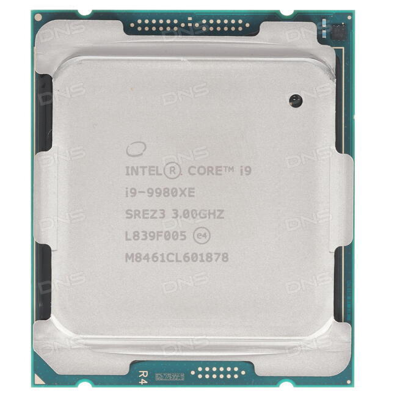

Central Processing Unit

A central processing unit (CPU), also called a central processor, main processor or just processor, is the electronic circuitry that executes instructions comprising a computer program. The CPU performs basic arithmetic, logic, controlling, and input/output (I/O) operations specified by the instructions in the program. This contrasts with external components such as main memory and I/O circuitry, and specialized processors such as graphics processing units (GPUs).
Note that in order for a computer to function, a CPU is mandatory, but a computer can function without a GPU.
AMD and Intel are two of the most successful CPU manufacturers. AMD's CPU focus on multi-core performance whereas Intel's CPU focus on single-core performance. There is no right or wrong, but gamers tend to acquire Intel CPUs while IT guys tend to buy AMD CPUs.
Go back to table of contents